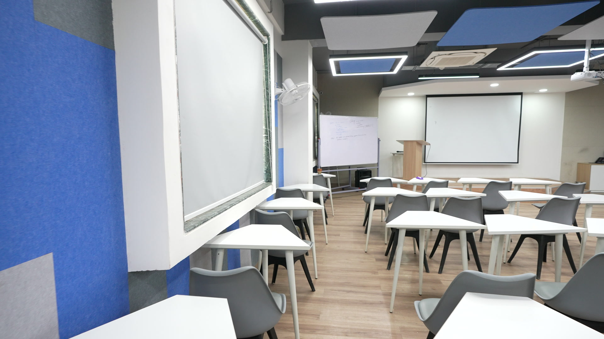

We reconstructed an indoor classroom from C5304.MP4 only. The browser renders a 3D Gaussian Splat and lets a visitor walk, look, inspect estimated collision boxes, and follow a route to a point of interest.
The app uses Next.js, React, Three.js, and a Gaussian splat renderer. Scene metadata defines the starting camera, relative scale, preview walk limits, obstacle boxes, and points of interest. The browser keeps reconstruction rendering separate from collision and route logic.
The repeat-capture SOP has seven actions. Select one room and record one continuous video with one lens. Keep the scene static and use steady light. Walk slowly with translation. Show the walls, floor edges, ceiling, and furniture from more than one position. Avoid fast pans. Preserve the raw video and its checksum. Accept only a coherent camera path before training.

| Input | assets/C5304.MP4, Sony H.264 video, 3840 × 2160, 50 fps, 60.48 s |
|---|---|
| Integrity | SHA-256 a1d92c06896efdaa50fc0cac56152ffd3a18e701ad4424e91d0ae75e183ccaf8 |
| Selection | First 55 s sampled at 2 fps and resized to 1920 × 1080. This made 110 candidate frames. |
| Excluded | Frames 100–110 did not join the continuous sequential camera model. They did not enter training. |
The video was provided before this run. We did not control its original capture settings. We did not use photos, other videos, prior camera poses, or a measured room dimension. The last part of the clip includes a fast pan and was not suitable for a continuous reconstruction.
PyCOLMAP used sequential SIFT matching and one camera model. It registered 99 frames in one model with 18,500 sparse points. The mean reprojection error was 0.633 pixels. The median adjacent camera step was 0.2433 model units; the maximum was 0.2877. The path passed a step-ratio gate.
An exhaustive attempt registered 110 frames but jumped about 9.43 units between frames 99 and 100. A seeded retry still jumped about 8.95 units. We rejected both models. An apparently complete frame count was weaker evidence than a coherent camera trajectory.
.splat layout.The central screen and seating are recognizable. Dark gaps, floating detail, and some ghosting remain near view edges and from novel viewpoints. Plain surfaces, reflections, limited coverage, and the rapid pan reduce reliable geometry. Extra training steps cannot create views that the accepted video did not capture.
The one-video room is the app's default scene. Visitors use WASD or arrow keys to move and the mouse to look. The viewer streams the splat, shows real byte progress, and offers a reset control. It reports camera positions and route lengths in scene units, since metric scale is unknown.
Search finds the projector screen and rear aisle. A floor-grid A* route avoids the configured obstacle boxes. The Colliders control displays those boxes and the preview limits. These proxies are a demonstration layer. They have not been checked against measured room geometry.
The code repository contains scripts/reconstruct-sfm.py, scripts/check-sfm-trajectory.py, scripts/package-classroom-cluster.py, scripts/calibrate-relative-room.py, and scripts/export-metric-splat.py. It contains 24 sample frames in tests/data/single-video-C5304. The full command sequence and limits are in docs/single-video-reconstruction.md.
npm ci → npm test → npm run build → npm run startCamera reconstruction: COLMAP / PyCOLMAP. Gaussian training and export: Nerfstudio Splatfacto and its gsplat dependency. Viewer: Next.js, React, Three.js, and GaussianSplats3D. Media extraction: FFmpeg. The app's scene configuration, collision preview, and integration code are in this repository. Each dependency retains its own license.
| Ready locally | One-video 3D asset; free-roam viewer; capture/reconstruction SOP; pipeline checks; sample data; four-page abstract; 3-minute-34-second demonstration video. |
|---|---|
| Must be verified externally | Public viewer URL, published repository with this version, and an accessible submission folder. |